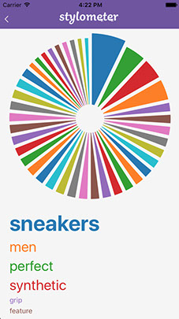

My research interests are broad, but center on common-sense reasoning over language. My work ranges from computational humor to leveraging linguistic features in reinforcement learning environments. I'm fascinated by the powerful inferences and creative solutions that can be drawn via applying the computational toolkit to real-world data.
I also love to code.
Currently, I'm a graduate student researcher in George Konidaris' Intelligent Robot Lab. My full CV is available here.
- Interests
- Machine Learning • NLP/NLG • Reinforcement Learning • Optimization • Algorithms
- Information Retreival • Data Science • Software Development • Cultural Anthropology
- Education (Brown University)
- Sc.M. Computer Science (2020)
- A.B. Computer Science (2019)
- A.B. Anthropology (2019)
- Organizations
- AI2 • Intelligent Robot Lab • RLAB Group • Brown University • ACLU • Daniel Research Lab • Empor.co
- Brown Noser Satirical Newspaper • Brown Political Review • Data Board
- Programming
- Python • Java • Matlab • C/C++ • SQL • Javascript • Scala
- Tools
- PyTorch • Tensorflow • Keras • Caffe • Scikit-Learn • AWS • Google Cloud • MTurk • OpenCV • D3
Looking for a fantastic web developer? My friend Eli Berkowitz has you covered.
My résumé can be accessed here.
Research
Collaborators: Aansh Shah, Naveen Srinivasan, Neev Parikh, George Konidaris
(Ongoing)
Authors: Zachary Horvitz, Nam Do, Michael L. Littman
While mysterious, humor likely hinges on an interplay of entities, their relationships, and cultural connotations. Motivated by the importance of context in humor, we consider methods for constructing and leveraging contextual representations in generating humorous text. Specifically, we study the capacity of transformer-based architectures to generate funny satirical headlines, and show that both language models and summarization models can be fine-tuned to regularly generate headlines that people find funny. Furthermore, we find that summarization models uniquely support satire-generation by enabling the generation of topical humorous text. Outside of our formal study, we note that headlines generated by our model were accepted via a competitive process into a satirical newspaper, and one headline was ranked as high or better than 73% of human submissions. As part of our work, we contribute a dataset of over 15K satirical headlines paired with ranked contextual information from news articles and Wikipedia.
Collaborators: Yejin Choi, Maarten Sap, Antoine Bosselut
- • As Research Intern at AI2, investigated neural networks for common-sense story generation
- • Integrated pipeline for extracting sequences of events from text, collating with Event2Mind corpus
- • Developed ELMO based entity-augmented neural architecture that updates embeddings based on mental state inference for better generations
Authors: Noah Siegel, Zachary Horvitz, Roie Levin, Santosh Divvala, and Ali Farhadi
‘Which are the pedestrian detectors that yield a precision above 95% at 25% recall?’ Answering such a complex query involves identifying and analyzing the results reported in figures within several research papers. Despite the availability of excellent academic search engines, retrieving such information poses a cumbersome challenge today as these systems have primarily focused on understanding the text content of scholarly documents. In this paper, we introduce FigureSeer, an end-to-end framework for parsing result-figures, that enables powerful search and retrieval of results in research papers. Our proposed approach automatically localizes figures from research papers, classifies them, and analyses the content of the result-figures. The key challenge in analyzing the figure content is the extraction of the plotted data and its association with the legend entries. We address this challenge by formulating a novel graph-based reasoning approach using a CNN-based similarity metric. We present a thorough evaluation on a real-word annotated dataset to demonstrate the efficacy of our approach.
Teaching
- • Graduate Head TA for Daniel Ritchie’s 360+ person class
- • Covered topics and co-wrote assignments ranging from Perceptrons and CNNs to SOTA including Graph NNs and Transformers
- • Oversaw migration to Tensorflow2.0, addition of conceptual questions, and introduction of new assignments
Anonymous Feedback - 'Zachary Horvitz was always so helpful, always knew the concepts :) No question was stupid and no questions were hard for him to answer. He really made me enjoy the class and understand the concepts.'
- Undergraduate TA for Eugene Charniak's seminar
- CORD-19 Kaggle Challenge (2020) (see more).
- CS2951-O Transportation Logistics, 1st Place Local Search Algorithm (2020) (see more).
- Star Trek GPT-2 (2019) (see more).
- Examining Regional Abortion Discourse in America via Twitter Data (2019) (see more).
- NeurIPs Reproducibility Challenge: "Sample-Efficient Deep Reinforcement Learning via Episodic Backward Update" (2019) (see more).
- Negotiating the Scientific: The Reconciliation of Top-Down and Bottom-Up Forces in the NSF (2019) (see more).
- Uber Developed: The Ride Hailing Business in South Africa (2018) (see more).
- Quantifying Ideology in the Rhode Island Senate (2018) (see more).
- CS1400 TRON Competition, 2nd Place (2018) (see more).
- ACLU Tech for Libery: Mapping Stop-And-Frisk, Arrest Data in MA (2017) (see more).
- Empor.co (2016-2018) (see more).
I also write satire for the Brown Noser Satirical Newspaper!
CORD19 Submission: Using Scibert-Embeddings augmented by MeSH words for COVID-19 literature clustering and retrieval.
Our submission to the CORD19 Kaggle Challenge embedding papers by extracting SciBert embeddings for Medical Subject Headings (MeSH) keywords. We employed our document embeddings for literature clustering and retrieval.

Perscriptive Analytics: Transportation Logistics - 1st Place.
Our local search algorithm for Vehicle Routing placed 1st in our Prescriptive Analystics course. Our approach combined simmulated annealing with evolutionary algorithms; at a high-level, we ran simulating annealing in parallel for the top-k feasible solutions, and, each time, decayed the initial temperatures using a hyperbolic function. We also clustered candidate problems to determine optimal hyperparameter configuations.
Star Trek GPT-2
For father's day, I fine-tuned HuggingFace's pretrained GPT-2 on all episode scripts from the original series.

Examining Regional Abortion Discourse in America Via Twitter
For David Kerter's graduate Anthropology Demography course, I collected over 200 thousand geo-tagged Twitter posts related to "Abortion," and clustered regions at the state and county level. My results indicate that Twitter discourses correlate with both public support for legalizing abortion at the state level and reproductive policy at the city level. These discourses appear to capture the circulation of tweets through ideological networks, and messages that articulate opinions through pro-life and pro-choice frames. Additionally, my analyses indicates that these data-driven approaches, while far from perfect, have the potential to augment existing demographic data, and aid advocacy groups by identifying regions with dissonance between grassroots sentiment and law.
NeurIPs Reproducibility Challenge Submission: "Sample-Efficient Deep Reinforcement Learning via Episodic Backward Update"
We participated in the NeurIPS 2019 Reproducibility Challenge. We attempted to replicate the results from Sample-Efficient Deep Reinforcement Learning via Episodic Backward Update (Lee et al. 2019), with modest success.a
Negotiating the Scientific: The Reconciliation of Top-Down and Bottom-Up Forces in the NSF),
The purpose of our paper is to chart how the National Science Foundation’s practices are crafted from both the “bottom-up forces” of the scientific community and the “top-down” decision-making that originates from other parts of the state. Specifically, we will explore how conflicting interpretations and goals interface, and how they are ultimately are reconciled, then embedded in organizational policy. To understand these processes, we interviewed individuals ranging from Computer Science professors to former Assisant Diectors of the NSF.
We also applied a data-driven lens to piece together how the NSF's grand awarding practices materialize in identifiable trends. For example, we analyzed frequent n-grams in NSF grant data. A sample visualization of some of our results from the CISE Directorate can be found here.
Ultimately, we found that ranking members of the organization are motivated by a deep sense of accountability to the scientific community, and interpret the advancement of knowledge as something innately in national interest. However, the NSF must contend with entities (e.g. Congress) that do not necessarily interpret a clear relationship between the two. Thus, the NSF must continually assure other parties of the the value in basic research and draft strategic priorities that align with the Executive Office. Through the language of “Broader Impact” and “Technical Merit” the foundation can simultaneously establish its role as a bastion of science, and as an influential organization that shapes society for the better. These terms also leave much to the interpretation of the scientific community, and provide breathing room within this complex political landscape.
Paper Unavailable (Pending Authorization)
Uber Developed: The Implications and Contestations of Ride Hailing Business in South Africa
Summary: In South Africa, Uber pivoting towards the role of economic developer; the ride-hailing application promotes a narrative wherein it is the provider of both job opportunities and socio-economic mobility. However, development is not an apolitical activity. In South Africa, Uber engages with a transportation architecture designed to differentiate classes of South African citizen. Uber’s interface with this constructed landscape, and attempt at extending it, accentuates systems of domination. Uber’s platform continues to reinscribe the racialized disparities with wealthy and poor; it affords the former with a convenient means of interacting with the landscape, inaccessible to the latter, and provides a means for transfiguring the unemployed into a highly controlled “flexible” labor source. However, the relation between Uber and transportation infrastructure is not unidirectional. In turn, South Africa’s reality imposes itself on the company, forcing to to adapt to an environment where it must contend with colonial associations, a corrupt police force, and overt violence.
Quantifying Ideology in the Rhode Island Senate
As Associate Director of Brown Political Review's Data Board, I wrote and oversaw data-driven projects and articles. In Quantifying Ideology: Data-driven philosophical scales, I applied dimensonality reduction to legislator voting records to tease out ideological clusters in the Rhode Island Senate.

CS1400 AI TRON Compeition -2nd Place
My submission to the CS1400 TRON competition placed second out of 22 teams. The class environment was a modified version of the original TRON game, where players compete to wall off their opponent. My implementation appled MiniMax with Alpha-Beta pruning, and evalued states with the Voronoi heuristic weighted towards power-ups. To handle stochastic power-up effects, I modified the vanilla MiniMax algorithm into Expecti-Max by running multiple expansions for each random state transition, anding compute the value of an action in expectation.
ACLU Tech for Libery: Mapping Stop-And-Frisk, Arrest Data in Massachusetts
As an intern with the Tech For Liberty Team, I analyzed Boston Police Department stop-and-frisk data and Massauchusetts low-level arrest records obtained by the ACLU of Massachusetts. Additionally, I built internal web tools to visualize these records, and collate them with external data sources (e.g. Census data). My work was part of a broader push by the ACLU to elucidate 'broken windows' policing tactics, which disproportionately target marginalized communities, and people of color.
Empor.co
Beginning in the summer of 2016, I co-founded a start-up with my close friend Lucas Rosenblatt. We started by building a mobile application for college students to buy and exchange goods and services. However, with the advent of Facebook buying-and-selling pages, we pivoted to a clothing recommender engine. Our application learned user's shoe preferences to make personalized recommendations. While Lucas and I ultimately disbanded our company, we are thankful for the invaluable (and humbling) opportunity to build a commericalizable product from scratch, and for our newfound appreciation of a robust tech stack.

| Email: | zacharyhorvitz@gmail.com | |
| LinkedIn: | zachary-horvitz | |
| GitHub: | @zacharyhorvitz |